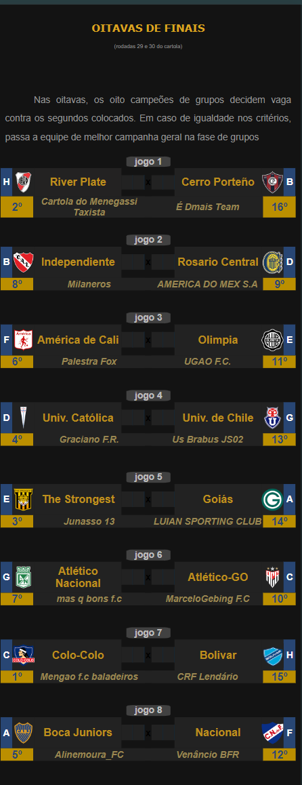

Campeonato de Cartola
A vitória no cartola é o sucesso do seu time!


Redação Cartola - 01/10/2024 - 13h15min
Principal competição interligas da temporada, cujo campeão garante acesso direto à disputa do Mundial Interclubes de Cartola, a Libertadores Interligas promove o primeiro jogo das oitavas já na próxima rodada.
De todas edições já disputadas esta foi, de longe, a mais defortunada para nossos clubes associados, com apenas dois times (Atletico Goianiense e Goiás) de um total de oito, alcançando a segunda fase de mata-mata. E se considerarmos que o técnico do Goiás (LUIAN SPORTING CLUB), apesar de treinar um clube da nossa liga, entrou na Libertadores representando a "Liga da Guarda", então teremos de considerar apenas o Atlético-GO como genuíno representante da CDC.
Atrevessando péssima fase neste nas últimas 13 rodadas, Atlético-GO, do "MarceloGebing FC" é apenas uma sombra do que foi até a volta 16, quando liderava o Campeonato Nacional com autoridade de quem havia levantado os dois últimos canecos que o clube disputou: campeão da série B 2023 e Campeão Goiano 2024. Em que pese as dificuldades do momento, Goianiense precisará mostrar serviço diante do Independiente do cartoleiro "Milaneros", que terminou líder do Grupo B, com 10 pontos, e no qual goza da vantagem de jogar por apenas dois empates contra o clube goiano.
Pior momento do que o goianiente, somente o rival Goiás. Entre os piores clubes da série A, na 17ª colocação, treinador esmeraldino (LUIAN SPORTING CLUB) sofre com enorme impopularidade perante o torcedor do verdão do serrado, e não é para menos: contratado na rodada 18, apenas três jogos antes do início da Libertadores, professor "LUIAN SPORTING CLUB" soma apenas 1 vitória nos onze disputados no nacional, chegando ao baixíssimo aproveitamento de 27%, fazendo o clube despencar do 11º para o 17º lugar no certame nacional, circustância que só não gerou demissão devido à estabilidade que todo treinador goza ao estar disputando uma copa interligas. Entretanto, com o clube igualmente já eliminado na Copa do Brasil, passar pelo Atlético Nacional do "mas q bons f.c", líder do grupo "G", é uma questão de tudo ou nada para o treinador. Em caso de insucesso, demissão do atual comandante é tida como certa nos bastidores do clube esmeraldino.
Na imagem abaixo, o chaveamento das "oitavas" da principal copa em disputa da temporada, ou então vizualizando todas as informações acessando a página da Libertadores clicando aqui.. .
